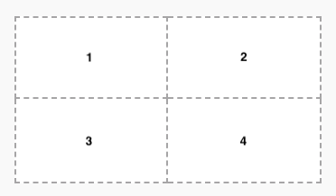
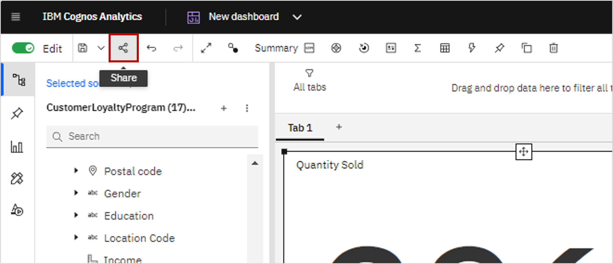
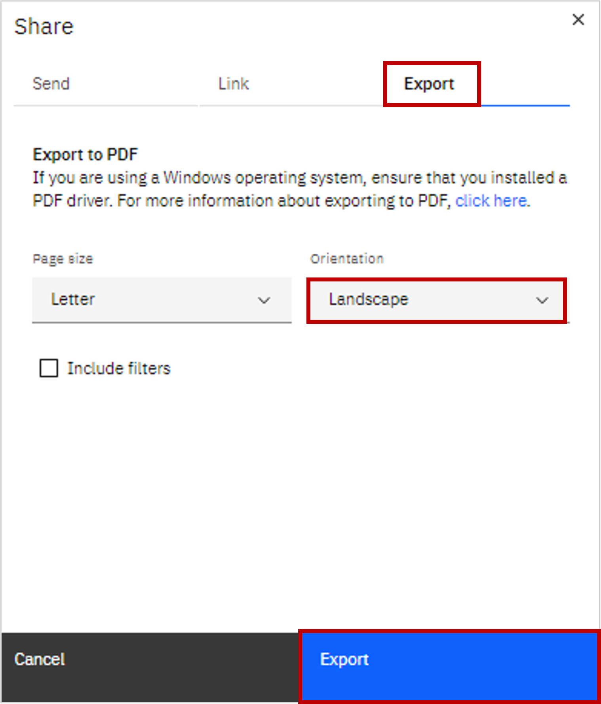
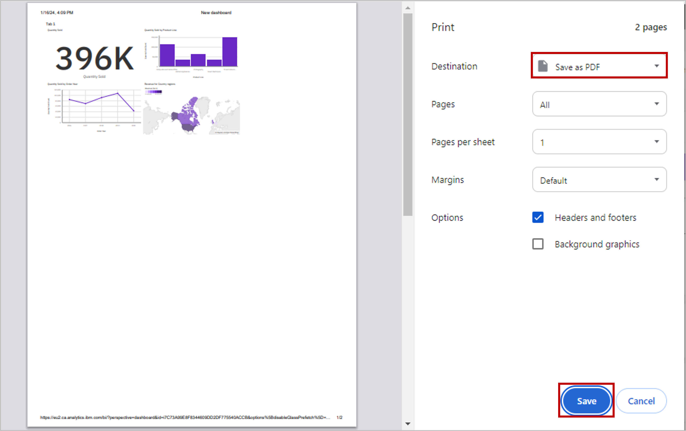

Option A - Building a dashboard with IBM Cognos Analytics
Estimated time needed: 45 minutes
In this assignment, you will create some visualizations and add them to dashboards using IBM Cognos Analytics.
Software Used in this Assignment
In this assignment, you will use the free trial version of IBM Cognos Analytics Tool.
Prerequisites
You need access to Cognos Analytics. This Cognos lab will guide to get your access to Cognos Analytics, and also get you started with how to use it to analyze the data.
Dataset Used in this Assignment
The dataset you are going to use in this assignment comes from the following source: link
Guidelines for the Submission
Get the files: "survey_data_updated.csv" from the downloaded folder and upload it as data assets to your project Cognos Analytics.
Create 3 dashboards (3 separate tabs under a single dashboard) as follows:
One dashboard using the 2 x 2 rectangle areas tabbed template - rename this dashboard tab to Current Technology Usage.
One dashboard using the 2 x 2 rectangle areas tabbed template - rename this dashboard tab to Future Technology Trend.
One dashboard using the 2 x 2 rectangle areas tabbed template - rename this dashboard tab to Demographics.

On the Current Technology Usage dashboard tab, use the data asset survey_data_updated.csv and capture the following metrics as visualizations:
In the first rectangle (Panel 1):
- Capture Top 10 LanguageHaveWorkedWith.
- Visualize as a Bar chart.
- Utilize Bars, Length, Color fields of Bar chart.
- Include Show value labels feature.
- Include a proper Chart title.
In the second rectangle (Panel 2):
- Capture Top 10 DatabaseHaveWorkedWith.
- Visualize as a Column chart.
- Utilize Bars, Length, Color fields of Column chart.
- Include Show value labels feature.
- Include a proper Chart title.
In the third rectangle (Panel 3):
- Capture Top 10 PlatformHaveWorkedWith.
- Visualize as a Word cloud chart.
- Utilize Words, Size, Color fields of Word cloud chart.
- Include a proper Chart title.
In the fourth rectangle (Panel 4):
- Capture Top 10 WebFrameHaveWorkedWith.
- Visualize as a Hierarchy bubble chart.
- Utilize Bubbles, Size, Color fields of Hierarchy bubble chart.
- Include a proper Chart title.
On the Future Technology Trend dashboard tab, use the data asset survey_data_updated.csv and capture the following metrics as visualizations:
In the first rectangle (Panel 1):
- Capture Top 10 LanguageWantToWorkWith.
- Visualize as a Bar chart.
- Utilize Bars, Length, Color fields of Bar chart.
- Include Show value labels feature.
- Include a proper Chart title.
In the second rectangle (Panel 2):
- Capture Top 10 DatabaseWantToWorkWith.
- Visualize as a Column chart.
- Utilize Bars, Length, Color fields of Column chart.
- Include Show value labels feature.
- Include a proper Chart title.
In the third rectangle (Panel 3):
- capture Top 10 PlatformWantToWorkWith.
- Visualize as a Tree map chart.
- Utilize Area hierarchy, Size, Heat fields of Tree map chart.
- Include Contrast label color feature.
- Include a proper Chart title.
In the fourth rectangle (Panel 4):
- Capture Top 10 WebframeWantToWorkWith.
- Visualize as a Hierarchy bubble chart.
- Utilize Bubbles, Size, Color fields of Hierarchy bubble chart.
- Include a proper Chart title.
On the Demographics dashboard tab, use the data asset survey_data_updated.csv and capture the following metrics as visualizations:
In the first rectangle (Panel 1):
- Capture Respondent distribution by Age.
- Visualize as a Pie chart.
- Utilize Segments, Size fields of Pie chart.
- Include Dispay % feature.
- Include a proper Chart title.
In the second rectangle (Panel 2):
- Capture Respondent Count by Country.
- Visualize as a Map chart.
- Utilize Regions-Locations, Regions-Location color fields of Map chart.
- Include a proper Chart title.
In the third rectangle (Panel 3):
- Capture Respondent distribution by Formal Education Level.
- Visualize as a Line chart.
- Utilize x-axis, y-axis fields of Line chart.
- Include Show value labels feature.
- Include Show markers feature.
- Include a proper Chart title.
In the fourth rectangle (Panel 4):
- Capture Respondent Count by Age, classified by Education Level.
- Visualize as a Stacked bar chart.
- Utilize Bars, Length, Color fields of Stacked bar chart.
- Include Show value labels feature.
- Include a proper Chart title.
To generate the GitHub link for the dashboard, please follow the instructions provided below:
On the application toolbar of your dashboard page, click Share icon.

Navigate to the Export tab, choose Landscape orientation, and click the Export button.

To save your dashboard as PDF, select Destination as Save as PDF, and click Save.

- Later, take screenshots of your dashboard.
Grading Information
For your assignment to be graded in a subsequent step in this module, you will be required to submit the permanent link to a read-only view of the dashboard you got in Task 6.
The main grading criteria will be:
- Have you downloaded the image of your dashboard that needs to be attached to the presentation?
- Have the correct tabs been created?
- Have you created the required number of visualizations for each tab of the dashboard?
- Have you captured the correct metrics, chart types, chart features and titles for each visualization?
- Are the results correct?
You will not be judged on:
- Your English language, including spelling or grammatical mistakes.